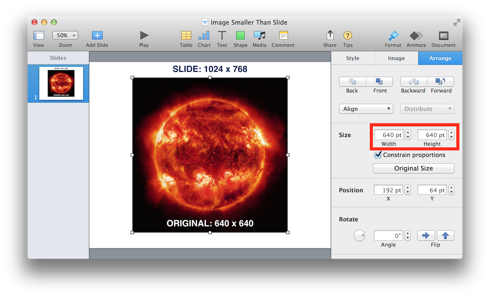
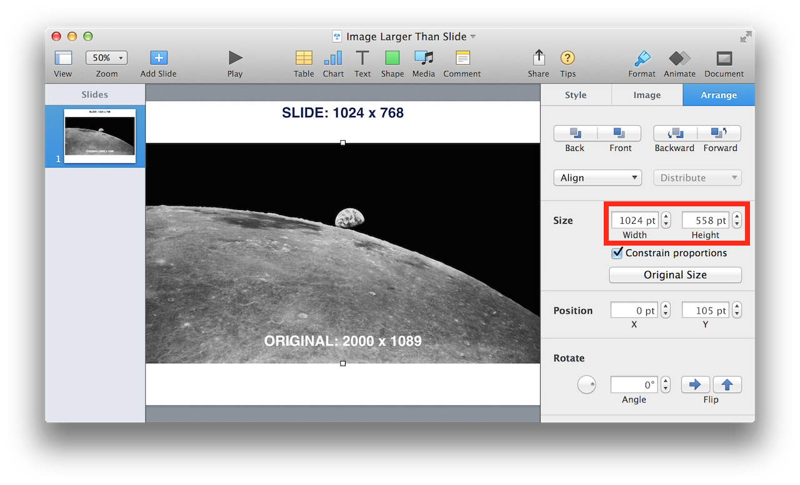
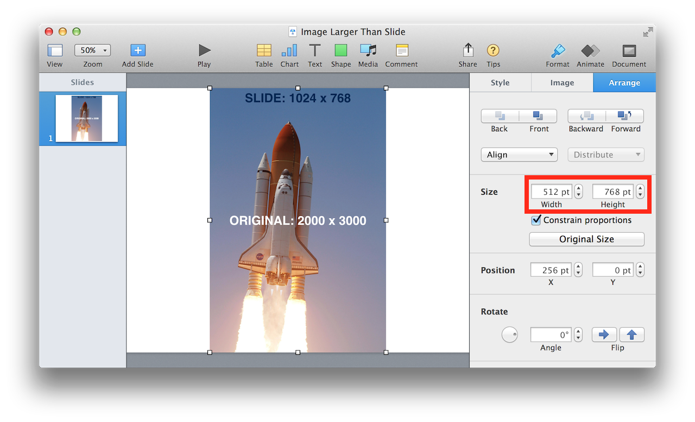
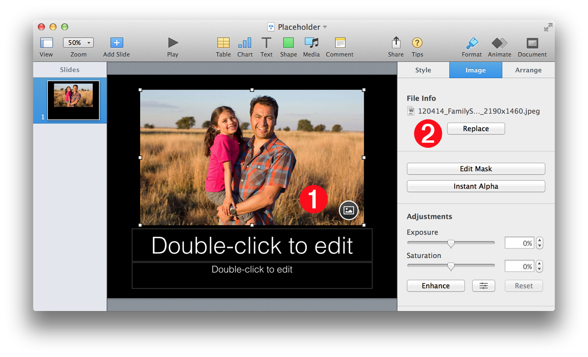
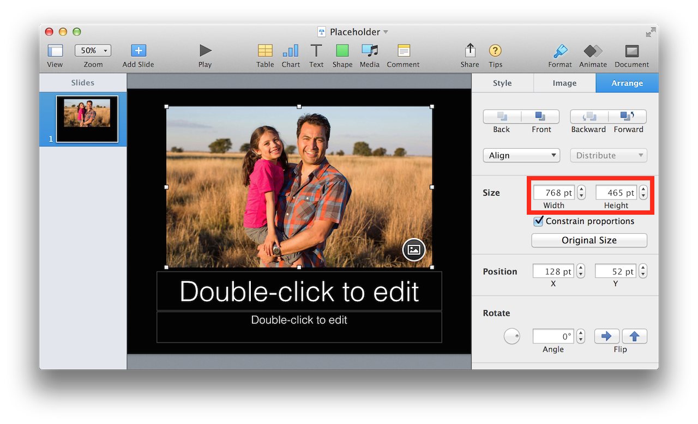
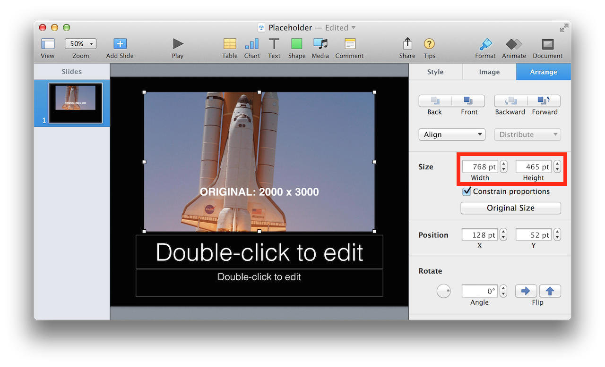
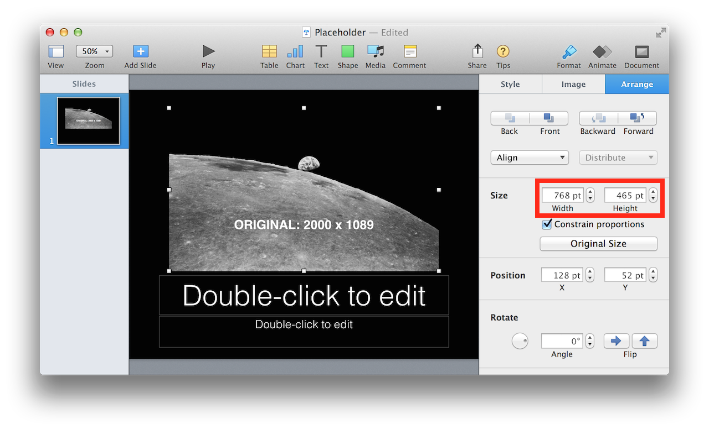

There are two methods for adding image files to a presentation:
- Create a new image item on a slide
- Replace an existing image placeholder
The two methods involve the use of different script techniques, the first requires the use of the make command, and the second is accomplished by changing the value of an image property.
The following sections show how to perform each method, and describe the default scaling and sizing methods when images are imported or replaced.
As stated above, new image items are added to a slide through the use of the make command, as shown in the script below:
{kind=link}
Automatic Scaling and Placement
When a script imports an image file into a presentation, Keynote applies specific scaling and positioning methods to the new image item. The following rules describe Keynote’s default behavior for the sizing and placement of images imported using scripts. (NOTE: The dimensions of the new image item are highlighted in red)
CREATED IMAGES: If the height of the created image is smaller than the slide height, AND the width of the created image is smaller than the slide width, the created image will be imported at its normal size and will be automatically centered on the slide. (⬇ see below )

NOTE: Once the image has been imported, a script can adjust the placed image’s dimensions and position as needed.
CREATED IMAGES: If the height of the created image is larger than the slide height, OR the width of the created images is larger than the slide width, the created image will be automatically scaled to fit centered on the slide. (⬇ see below )


The development of presentations with a consistent look and style often depends upon the use of slide templates. The standard set of slide templates incorporated in the default Apple Keynote themes, include ones that feature images in both prominent and supporting roles.
In the iWork applications, images can be designated as media placeholders by selecting the image and then choosing the Define as Media Placeholder menu item from the Format > Advanced sub-menu. Images chosen as media placeholders will display a small round icon at the bottom right of the image 1 (⬇ see below )

1 Image Placeholder • The selected media placeholder displays an indicator icon at the bottom right of the image.
2 Image File Info • The name of the selected image file appears here, alongside the Replace button, providing the means, in the application user interface, to replace the media placeholder.
The following script shows how an image placeholder can be replaced with a specified image file, by changing the value of the placeholder image’s file name property:
{kind=link}
Automatic Scaling and Placement
The following rules describe Keynote’s default behavior for the sizing and placement of images that replace media placeholders.
REPLACEMENT IMAGES: Images that replace placeholder images are by default, set to be proportionally scaled to fill the container defined by the placeholder image.
(⬇ see below ) The selected media placeholder. (Note its dimensions shown in red)

(⬇ see below ) The replacement images, scaled proportionally to fill the space defined by the placeholder. (Note that the dimensions remain the same as before)

